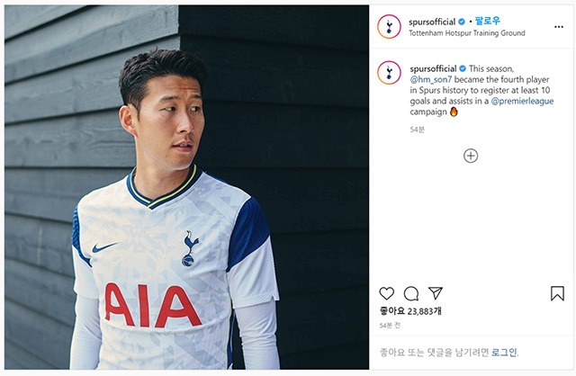

토트넘은 3일 구단 인스타그램을 통해 “이번 시즌 손흥민은 토트넘 역사에서 프리미어리그 10골, 10도움을 달성한 4번째 선수가 됐다”고 전했다. 손흥민은 이번 시즌 만능 공격수의 능력을 유감없이 보여주었다. 프리미어리그 30경기에 나서 11골 10도움을 기록하며 아시아 선수 최초로 10-10을 달성했다. 이번 시즌 프리미어리그에서 10-10을 달성한 선수는 손흥민 외에 케빈 더 브라위너(맨체스터 시티, 13골 20도움, 모하메드 살라(리버풀, 19골 10도움)에 불과할 정도로 대기록이다.
토트넘 구단 역사에서도 손흥민 외에 단 3명만 달성했을 정도다. 손흥민에 앞서 위르겐 클린스만(1994/1995시즌), 에마뉘엘 아데바요르(2011/2012시즌), 크리스티안 에릭센(2017/2018시즌)이 10-10을 해냈다. 손흥민은 이러한 활약을 앞세워 2년 연속 토트넘 최고의 선수 자리에 올랐다. 그는 지난해에 이어 올해에도 토트넘 올해의 선수, 올해의 골, 주니어 회원 선정 올해의 선수, 서포터 선정 올해의 선수를 수상했다.